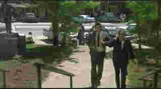

Mississippi Burning/A,B+
Image-Orion/1988/127m/WS 1.85
The controversial fictional account of the murder of three
young civil rights workers outside a Mississippi town, director Alan Parker's powerful and
brutal film marries the dramatic power of racial conflict with a methodical procedural
style.
In the aftermath of the murder, the FBI sends two agents to
Jessup County, Mississippi to investigate the heinous crime. The town's constabulary
resent the intrusion with an attitude that the South can take care of its own problems.
After several confrontations, the FBI sends for reinforcements. With the added government
presence, the KKK begins a campaign of terror and intimidation to further prevent local
cooperation with the authorities. The lead agents not only have to face up to harsh local
resistance, but before striking at the heart of the conspiracy, they must resolve their
own differences.
 |
Hackman and Dafoe arrive in Mississippi.©Orion |
Much of the conflict is expressed
from the outset as agents Rupert Anderson and Alan Ward arrive on the scene Gene Hackman
is given one of his finest screen opportunities in the role of agent Rupert Anderson.
There is a relentlessness to Hackman's performance that drives this film. Willem Dafoe
plays lead agent Alan Ward. The contrast in acting styles, the easy manner of Hackman and
the more rigid Dafoe, add a natural spice to the relationship of their characters.
Hackman's Southern small town Anderson and Defoe's Eastern college educated Ward express
an intimate portrait of the conflict between North and South. But it's the way Hackman
digs in, the sense of moral right that makes him want to clean up the mess, the fire that
wants to burn through the wall of hatred that poisons every one it touches, that sets his
Anderson apart. You could look at Mississippi Burning as a procedural drama of
sorts as the FBI sweeps into the small Mississippi town and sets up shop for their
investigation into the deaths of the three men. But above all, there is the eternal
struggle of the South and its past.
Alan Parker is a fine visual story-teller. Given the excellent
Gerolmo script, the Walker Evans-like cinematography of Peter Bizou(Check out another side
of Bizou's work in the current The Truman Show.)and the terrific performances
across the board, Parker puts the pieces together that make Mississippi Burning
an outstanding film.
Parker's commentary on an audio track is a welcome addition to
this fine DVD production. There are times when the decade of years since he made Mississippi
Burning seem to blur his memory of the filming, yet small insights add welcome
dimensions to the filmmaking process. One can only imagine the entire crew putting cotton
on a field of bare cotton pants for one scene or the tons of dust dropped on the streets
to achieve the look Parker wanted. The commentary has gaps as scenes play out, but one has
the sense that Parker is sharing those moments with the audience. The widescreen DVD has
consistently sharp images. Dusty landscapes have a good balance of tight film grain and
slightly washed out color. Burning crosses play dramatically against pure black night
backdrops. The Dolby 2-channel recording is clean, the Southern accents distinct, and the
score by Trevor Jones has an open feeling.